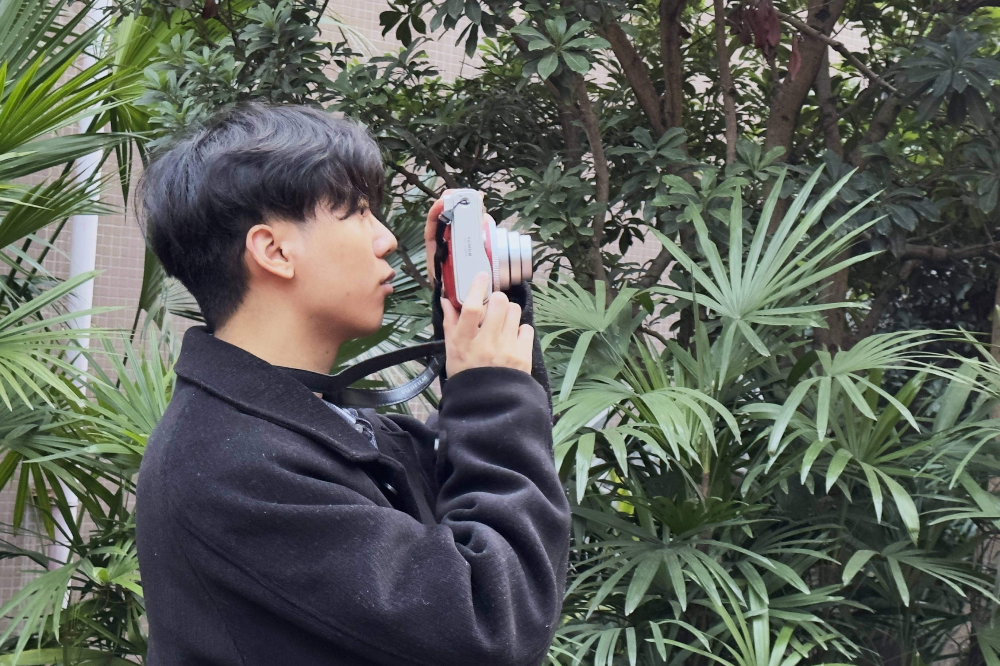

Gallery
Life beyond research — capturing moments of beauty.


Hello, I'm
M.S. Student in Computer Science
I am a graduate student at Shaanxi Normal University, advised by Prof. Xie Juanying. My research focuses on developing novel algorithms for cluster analysis and feature selection, with applications in data mining and machine learning. I also have research interests in cryptography.
Prior to my graduate studies, I received my B.S. degree in Computer Science and Technology from Chongqing Jiaotong University in 2021, where I graduated as an Outstanding Graduate.
Shaanxi Normal University
Advisor: Prof. Xie Juanying
Chongqing Jiaotong University
Outstanding Graduate
Knowledge-Based Systems, 2024, 294: 111748.
Pattern Recognition, 2025: 11953.
IEEE Transactions on Information Forensics and Security, 2025.3594185.
IEEE Transactions on Dependable and Secure Computing, 2026: 10.1109/TDSC.2025.3605826.
IEEE Transactions on Knowledge and Data Engineering.
IEEE Transactions on Cybernetics.
C/C++ 程序设计大学B组 二等奖
C/C++ 程序设计大学B组 一等奖
"E估科技—新一代基于小样本深度学习的房地产智能评估系统" 银奖
"新一代基于小样本机器学习的房地产智能估价系统" 一等奖
二等奖
三等奖
陕西师范大学 2023-2024 年度
陕西师范大学 2023-2024 年度
重庆交通大学
重庆交通大学 2020-2021 学年
重庆交通大学 2019-2020 专项奖学金
CET-4 & CET-6
项目负责人
大学生创业基金项目，获得 10,000 元项目资金。负责整体系统平台的设计与搭建， 以及云数据库的设计与实现。
项目负责人
市级大学生创新创业训练项目，获得 5,000 元项目资金。参与评估方法与数学模型的比较选择， 负责整体系统平台的搭建与功能模块设计。
Life beyond research — capturing moments of beauty.
